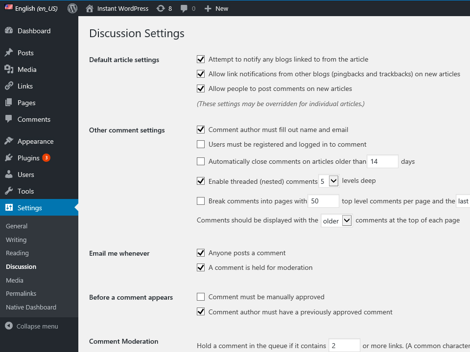

DISCUSSION SETTINGS TAB
DASHBOARD >> SETTINGS >> DISCUSSION
Discussion Settings control how you manage user comments, filter spam comments, how you display the user’s avatars on your site, and how you handle incoming pingback/traceback from other blogs.
Detail of Discussion Tab
Default Article Settings
- Attempt to notify any blogs linked to from the article If you enable this checkbox, WordPress will send a ping to the site or article you have linked to in your post. If that site allows pingbacks, then your mention of their site or article will show up in that site's comment section. This option triggers the notification at the time of publishing your article to the internet. If your article contains many hyperlinks, then it will slow down the posting process as WordPress has to contact all of the sites before the post is published.
- Allow link notifications from other blogs (pingbacks and trackbacks) This option enables your blog to accept pings from other sites which makes a reference your site or an article on your site. If you check this box (enable), then any pingbacks and trackbacks that are received by your blog will appear in the comments section of your respective post.
- Allow people to post comments on new articles By selecting the checkbox, you are telling your WordPress blog to allow comments on every new post. This option is also shown in the individual post editor screen, where the checkbox for allowing comments will be automatically selected.
- Comment author must fill out name and e-mail This is a step towards restricting comment spammers. This option forces commenter to fill-up their name and email address while commenting. In reality, the name and e-mail address are never verified, but this is the step most spammers or automated software don't like. It is expected that legitimate commenter will have no problem in filling out this short form
- Users must be registered and logged in to comment It is another level of spam protection, enabling this feature will force visitors to register and login to your site before posting comments. Standard WordPress registration only requires name and email address like the previous option, but this time the email address will be verified by sending a verification link.
- Automatically close comments on articles older than _ days If you check this box and enter the number of days (e.g. 14 days), then WordPress will stop accepting comments in any post older than that amount of days.
- Enable threaded (nested) comments _ levels deep When a comment is posted on any article, you (or any other viewer) can reply to that comment instead of starting a new top-level comment. This reply is then nested under the original comment and displayed with an indent so that they can be distinguished. Thereafter, each successive reply will get posted beneath the comment to which it applies. For comments with longer threads, WordPress allows up to 10 levels of threading.
- Break comments into pages If you get a hot topic, you may have a never-ending page of comments. This setting allows you to break the comments into pages based on the number of comments.
- Comments should be displayed with the comments at the top of each page You can arrange the comments in the form of ascending or descending order.
- Attempt to notify any blogs linked to from the article If you enable this checkbox, WordPress will send a ping to the site or article you have linked to in your post. If that site allows pingbacks, then your mention of their site or article will show up in that site's comment section. This option triggers the notification at the time of publishing your article to the internet. If your article contains many hyperlinks, then it will slow down the posting process as WordPress has to contact all of the sites before the post is published.
- Allow link notifications from other blogs (pingbacks and trackbacks) This option enables your blog to accept pings from other sites which makes a reference your site or an article on your site. If you check this box (enable), then any pingbacks and trackbacks that are received by your blog will appear in the comments section of your respective post.
- Allow people to post comments on new articles By selecting the checkbox, you are telling your WordPress blog to allow comments on every new post. This option is also shown in the individual post editor screen, where the checkbox for allowing comments will be automatically selected.
- Comment must be manually approved When you check into this box, the author gets an e-mail for every single comment that is posted.
- Comment author must have a previously approved comment This can be checked when you want to approve a comment of an author whose has commented and his e-mail address matches the e-mail address of the previous posted comment. Otherwise the comment is held for moderation.
- Hold a comment in the queue if it contains _ or more links It is a common characteristic of spammers to spammers to include more than one hyperlinks in their comments. This option enables bloggers to restrict any comment that has more number of hyperlinks than what is specified here. You can put a number into this box to tell WordPress how many hyperlinks you will allow in a comment before holding it for moderation.
- When a comment contains any of these words in its content, name, URL, e-mail, or IP, it will be held in the moderation queue This option matches the specified word with the comment, and if found then the comment is held for moderation. But remember that this option matches inside words and NOT case sensitive, so writing "press" will also match the word "WordPress". In this text box, you can add common spam words, or can add IP address of spammers or even URL's of any domain if you want to block them completely.
- When a comment contains any of these words in its content, name, URL, e-mail, or IP, it will be put in the trash This is a list of words that will cause a comment to go straight to the trash.
- Show Avatars Selecting this will enable avatars of the commenter to be displayed along with the comments. Deselecting this option would hide those avatars.
- Maximum Rating This allows you to give a maturity rating on your blogs content.
- Default Avatar If a person hasn’t created an avatar, but you have enabled avatars for your comments, this is the image that will be seen.
Once you click the save changes button, a confirmation text box will appear notifying you that your settings have been saved.